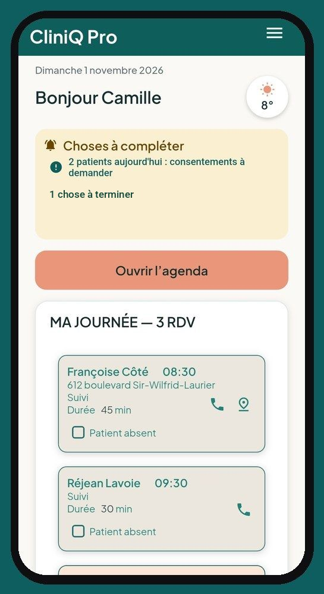
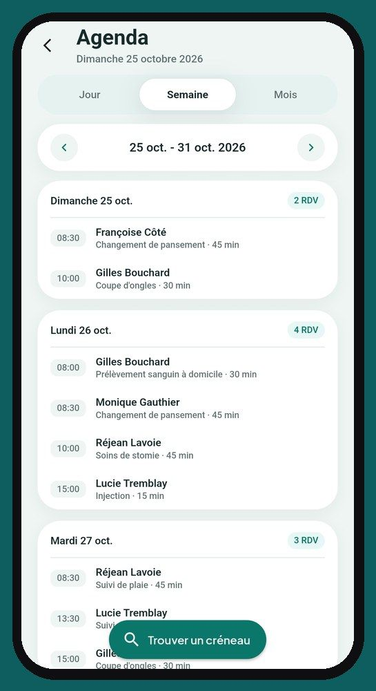
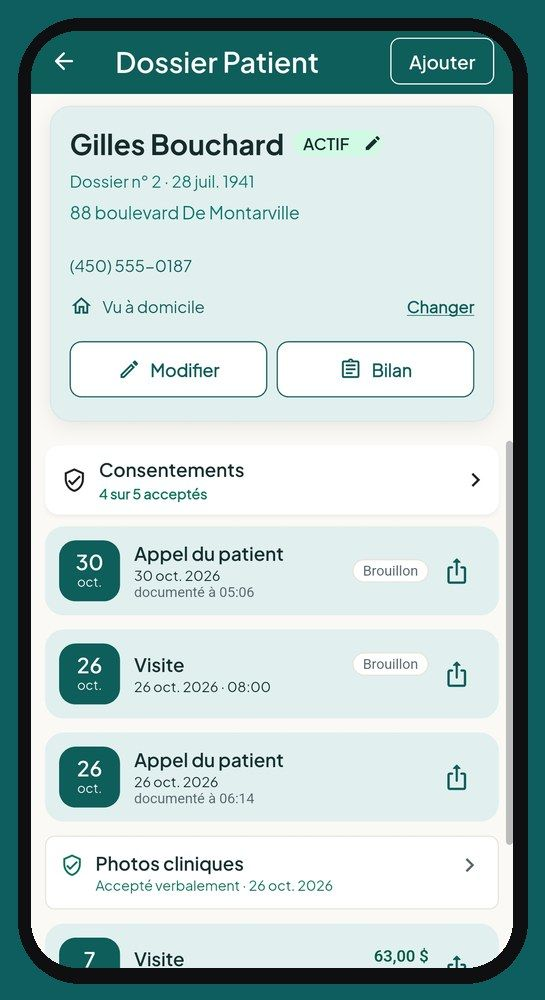
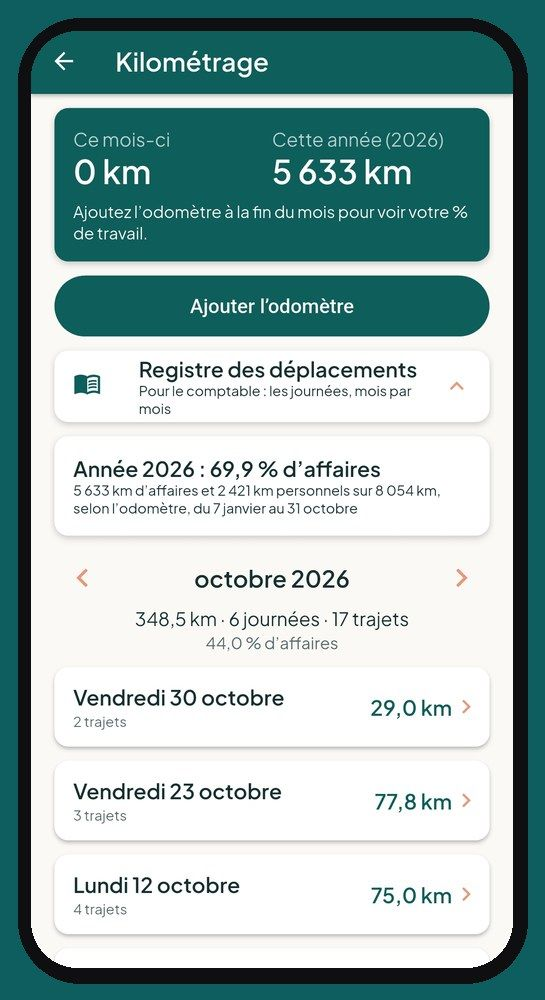
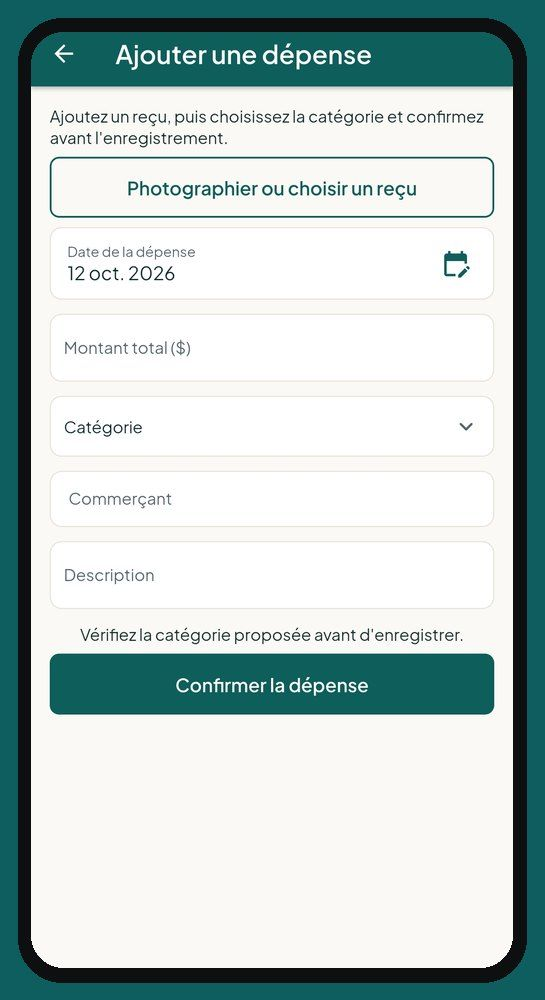
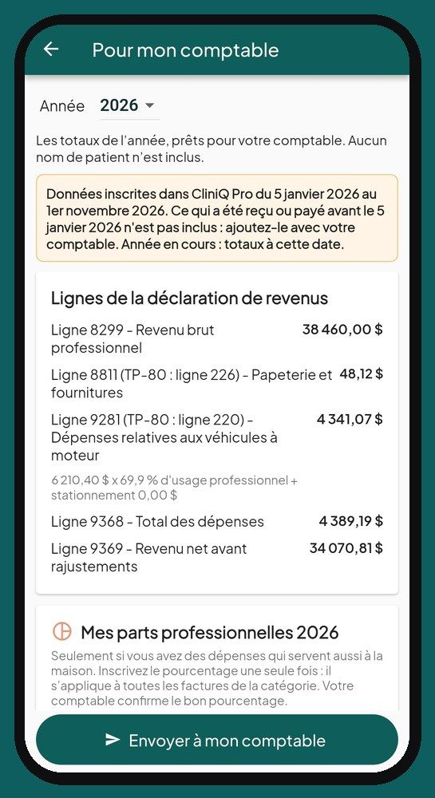

Trousse média de CliniQ Pro
Tout ce qu'il faut pour présenter CliniQ Pro : la description officielle, les faits, le logo, des captures d'écran et une photo de la fondatrice. Vous pouvez reprendre ces textes et ces images pour parler de CliniQ Pro.
En une phrase
CliniQ Pro est le logiciel et l'application des professionnelles et professionnels de la santé à leur compte au Canada : agenda, dossier patient, notes signées, reçus, dépenses, kilométrage et sommaire pour le comptable, au même endroit.
Description
CliniQ Pro (se dit « Clinique Pro ») est une application mobile de gestion de pratique pour les professionnelles et professionnels de la santé qui travaillent à leur compte, à domicile, en clinique ou les deux : soins infirmiers, soins podologiques, soins de plaies, réadaptation, massothérapie, orthophonie, santé mentale et bien d'autres.
Elle réunit l'agenda par lieu de travail, le dossier patient avec bilan de santé, les consentements datés, les notes cliniques signées et verrouillées, les reçus et factures en PDF avec les taxes de chaque province, les dépenses avec photo du reçu et le kilométrage calculé à partir des rendez-vous. À la fin de l'année, la professionnelle remet à son comptable un sommaire classé selon les lignes de la déclaration de revenus, et ses dépenses en fichier Excel avec les photos des reçus.
CliniQ Pro a été créée par Nancy Proulx, infirmière auxiliaire en soins podologiques à domicile, pour répondre à ses propres journées sur la route.
Les faits
| Nom | CliniQ Pro (marque déposée) |
|---|---|
| Entreprise | 18325006 Canada Inc., fondée en 2026, au Québec |
| Fondatrice | Nancy Proulx, infirmière auxiliaire en soins podologiques |
| Lancement | 1er janvier 2027, partout au Canada |
| Appareils | Android et iPhone (téléphone et tablette) |
| Langues | Français et anglais |
| Prix | 44,95 $ par mois ou 449,50 $ par année, tout inclus, rendez-vous illimités. Les taxes s'ajoutent selon la province. |
| Essai | 14 jours gratuits, sans carte de crédit |
| Données | Hébergées au Canada |
| Pour qui | Professionnelles et professionnels de la santé à leur compte, à domicile, en clinique ou les deux |
Logo
Écrire le nom ainsi : CliniQ Pro, avec un Q majuscule. Site officiel : cliniqpromobile.ca.
Captures d'écran


Accueil

Agenda

Dossier patient

Kilométrage

Dépenses

Pour mon comptableLa fondatrice

« Je suis infirmière auxiliaire en soins podologiques à domicile. J'ai bâti CliniQ Pro pour mes propres journées, et je m'en sers chez mes patients. »
— Nancy Proulx, fondatrice de CliniQ Pro
Contact médias
Pour une entrevue, une démonstration ou une question : soutien@cliniqpromobile.ca